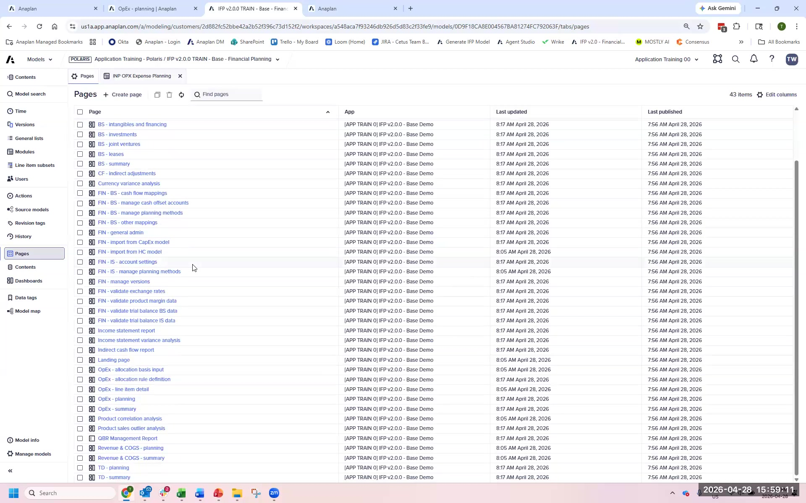
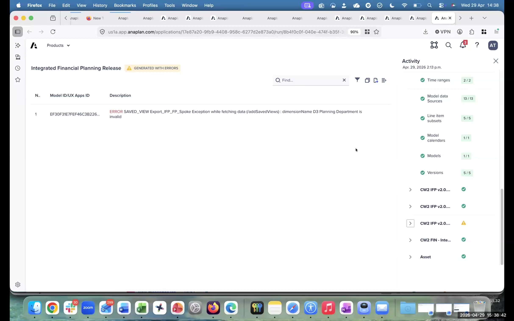
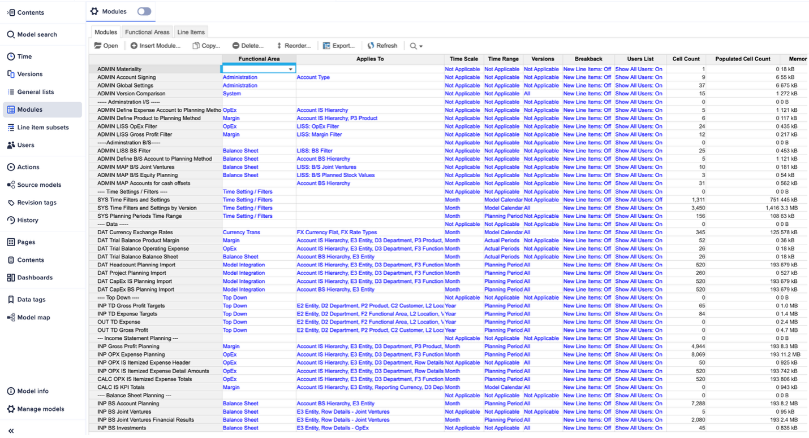
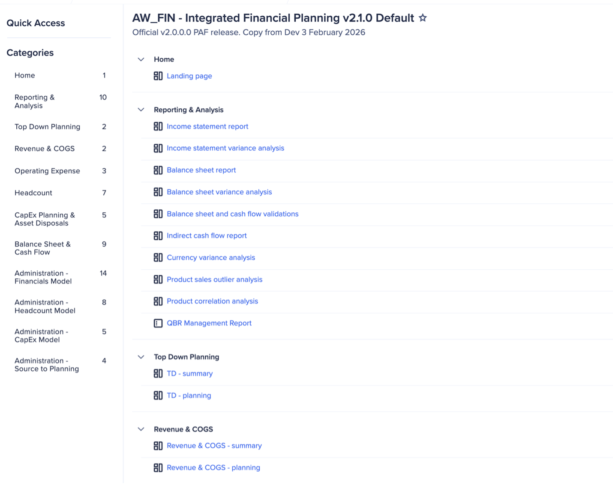

Geração do modelo
O que acontece durante a Geração, quanto tempo leva e o que esperar
Esta é uma tradução automática da versão original em inglês. Para a versão oficial e mais atualizada, consulte a versão em inglês. Reporte qualquer problema de tradução ao seu contato Anaplan.
O que a Geração faz
Quando você dispara a Geração, o App Framework lê todas as 44 respostas de configuração e provisiona a estrutura completa do modelo IFP. Isso não é uma cópia de template — é um processo dinâmico de Geração que aplica suas decisões de configuração para produzir um modelo específico para suas respostas.
A Geração provisiona quatro modelos:
- Financial Planning — o modelo principal de planejamento (Módulos INP, CALC, OUT)
- Headcount — o modelo de HC com planejamento em nível de Job (se habilitado)
- Admin — local principal para fazer mapeamentos de metadados de origem para planejamento para Hierarquias de account, entity e department.
- CapEx — modelo de planejamento de capex (apenas se habilitado)
O que é criado
| Tipo de objeto | Quantidade (típica) | O que contém |
|---|---|---|
| Modelos | 4 | Financial Planning, Headcount, Admin, CapEx |
| UX Apps | 1+ | A aplicação de planejamento IFP que os usuários finais acessarão |
| Assets | ~17 | Definições de import, saved views, configurações de dashboard |
Estados de status da Geração
| Status | O que significa | O que fazer |
|---|---|---|
| Generating... | A Geração está em andamento. Os modelos estão sendo provisionados. | Aguarde. Não dispare outra Geração. Esperado: 10–20 min. |
| Generated with Errors | A Geração foi concluída. Algumas fórmulas têm erros por causa de diferenças de configuração em relação ao modelo base. | Normal e esperado. Revise os Error Logs — a maioria dos erros é resolvível. |
| Generated Successfully | A Geração foi concluída sem erros de fórmula detectados. | Prossiga para as etapas pós-geração. |
| Generation Failed | A Geração não foi concluída devido a um erro de plataforma. | Contate o suporte Anaplan. Não tente outra Geração sem diagnóstico. |
'Generated with Errors' é normal e esperado, especialmente em treinamento e implementações em estágio inicial. Significa que algumas fórmulas referenciam itens que diferem do template do modelo base — geralmente causado por renomeação de Hierarquias, remoção de geografia ou escolhas de configuração que diferem das premissas do template. O modelo está funcional. Você vai trabalhar na lista de erros de forma sistemática na seção Revisão do Error Log.
Páginas do modelo IFP após a Geração

Geração com erros — Painel de atividade

Módulos padrão de Financial Planning após a Geração

Estrutura de navegação UX & páginas
Quando a Geração conclui, o app UX gerado contém páginas e categorias organizadas que os usuários acessam para fazer seu trabalho de planejamento. O template padrão v2.1.0 inclui:

Etapas da Geração
Dispare a Geração
No Application Framework Configurator, após concluir todas as seções, clique em Generate. Confirme quaisquer prompts. Anote a hora de início.
Monitore o status
A página de visão geral do App Framework mostra o status da Geração. Atualize periodicamente. Não feche o navegador nem dispare outra Geração enquanto estiver em andamento.
Primeiro olhar no modelo gerado
Uma vez concluído, navegue até seu Workspace. Você deve ver os quatro modelos IFP listados. Abra o modelo Financial Planning e verifique se os sub-processos de planejamento estão presentes — incluindo Revenue & COGS, Operating Expense, Headcount, CapEx Planning e Balance Sheet & Cash Flow (com base em sua configuração).
Verifique os Error Logs
Volte ao App Framework. No canto inferior direito da página de visão geral, encontre a contagem de Error Log. Clique para expandir o log. Nota: mais de 0 erros é normal. Prossiga para a Revisão do Error Log.